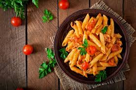

Home
Macaroni Recipe

Description
Macaroni is a type of dry pasta shaped like small tubes, most commonly found in a curved, elbow-like form. Made primarily from durum wheat and water, it's a staple in many kitchens due to its quick cooking time and ability to pair well with a variety of sauces. Macaroni is especially popular in Western cuisine, where it's often used in comfort food dishes like macaroni and cheese or pasta salads.
Beyond just mac and cheese, macaroni is incredibly versatile. It can be baked into casseroles, added to soups, or tossed with vegetables and proteins for a quick meal. Its tubular shape helps hold sauces, making it ideal for creamy, cheesy, or tomato-based dishes. While it's simple and humble, macaroni remains a classic that adapts well to different flavors and styles of cooking.
Ingredients
Note: This recipe looks at preparing Mac 'n' Cheese version of macaroni
- 2 cups elbow macaroni (or any short pasta)
- 2 tablespoons butter
- 2 tablespoons all-purpose flour
- 2 cups milk (whole milk is best, but any kind works)
- 1 ½ to 2 cups shredded cheese (cheddar is classic; mix with mozzarella, gouda, or parmesan if you want)
- Salt (to taste)
- Black pepper (to taste)
- Optional: ½ teaspoon mustard powder or a dash of hot sauce (for extra flavor)
- Optional topping: ½ cup breadcrumbs mixed with 1 tablespoon melted butter (if baking)
Steps
- Boil the pasta in salted water until al dente, then drain and set aside.
- Melt the butter in a saucepan over medium heat.
- Whisk in the flour and cook for about 1–2 minutes to form a roux (should be bubbly but not browned).
- Slowly pour in the milk, whisking constantly to avoid lumps.
- Cook and stir until the sauce thickens (about 5–7 minutes).
- Add shredded cheese, stir until completely melted and smooth.
- Season with salt, pepper, and optional extras like mustard powder or hot sauce.
- Mix in the cooked pasta and stir until fully coated with the cheese sauce.
- (Optional) For baked mac: pour into a greased baking dish, top with buttered breadcrumbs, and bake at 180°C (350°F) for 20 minutes until golden and bubbly.